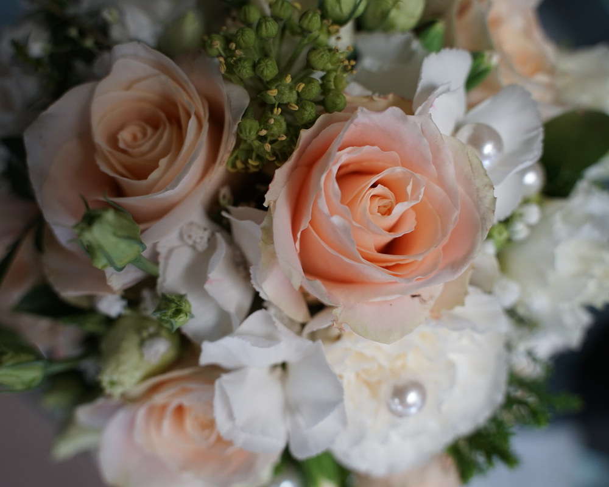

Floristik & Sträuße aus Dettenhausen
Jeder Strauß ist Handarbeit – frisch gebunden, saisonal gedacht und auf Ihren Anlass abgestimmt.
Ein Blumenstrauß sagt oft mehr als viele Worte. Bei der Floralen Schmiede entsteht jeder Strauß persönlich von Hand – keine Stangenware aus dem Eimer, sondern eine individuelle Zusammenstellung, die zu Ihrem Anlass und zur Jahreszeit passt.
Sträuße für jeden Anlass
Ob spontane Freude oder lang geplantes Geschenk – wir binden Ihren Strauß so, wie Sie ihn brauchen:
- Geburtstag, Muttertag & Valentinstag
- Jubiläum, Hochzeitstag & Verlobung
- Geburt, Taufe & Einweihung
- Dankeschön, Genesung oder einfach „weil"
Frisch & saisonal aus eigener Gärtnerei
Weil wir zugleich eine Endverkaufsgärtnerei sind, kommen viele Pflanzen aus kurzer Distanz und sind entsprechend frisch. Das merkt man – an der Haltbarkeit und an der Auswahl, die mit den Jahreszeiten wechselt. Sagen Sie uns Ihr Budget und Ihren Anlass, den Rest übernehmen wir.
Blumen verschicken mit Fleurop
Sie möchten jemandem in einer anderen Stadt eine Freude machen? Als Fleurop-Partner verschicken wir Blumengrüße deutschlandweit. Regional liefern wir in Dettenhausen, Tübingen und Umgebung.
Häufige Fragen
Kann ich einen Strauß kurzfristig bekommen?
In der Regel ja. Rufen Sie kurz an – häufig lässt sich Ihr Strauß noch am selben Tag binden.
Verschickt ihr Blumen auch in andere Städte?
Ja, über Fleurop versenden wir deutschlandweit. Regional liefern wir im Raum Dettenhausen/Tübingen selbst aus.